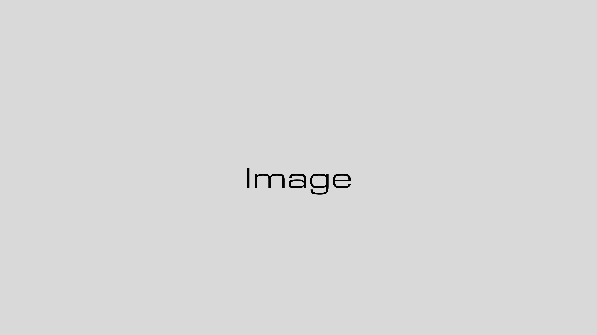

左にテキスト、右に画像を配置する
レイアウト。
プロダクトのスクリーンショットや
概念図を添えるのに最適。
- ポイント1：視覚的な補足
- ポイント2：読み取りやすい構造
Your Tagline Here.
サブタイトル・発表の概要を1〜2行で。
余白が伝える力を持つ。
2026.04 / あなたの名前
本文テキスト。1スライドに1メッセージ。
余白を活かして、情報を詰め込みすぎない。
2段落目の本文。補足情報はここに。
強調したいキーワードはこのようにマークする。
問題点や課題をここに書く。
手作業・非効率・高コスト。
改善点やメリットをここに書く。
自動化・高速・低コスト。
データを集める
パターンを見つける
施策に落とす
効果を測定する
MVPの開発と初期ユーザーへの提供。
仮説検証を最速で回す。
顧客基盤の拡大と
マネタイズモデルの確立。
海外展開・パートナー連携・
プロダクト多角化。
ゴールから逆算して
打ち手を構造化する。
仮説を最速で形にし
市場からFBを得る。
データに基づいて
サイクルを回し続ける。
左にテキスト、右に画像を配置する
レイアウト。
プロダクトのスクリーンショットや
概念図を添えるのに最適。

課題
作家性・継続性・視聴者データ——
これを統合する機能が欠けていた。
セクションの区切りに使う。
章立てのあるプレゼンに最適。
お名前 / 肩書き・所属
contact@example.com